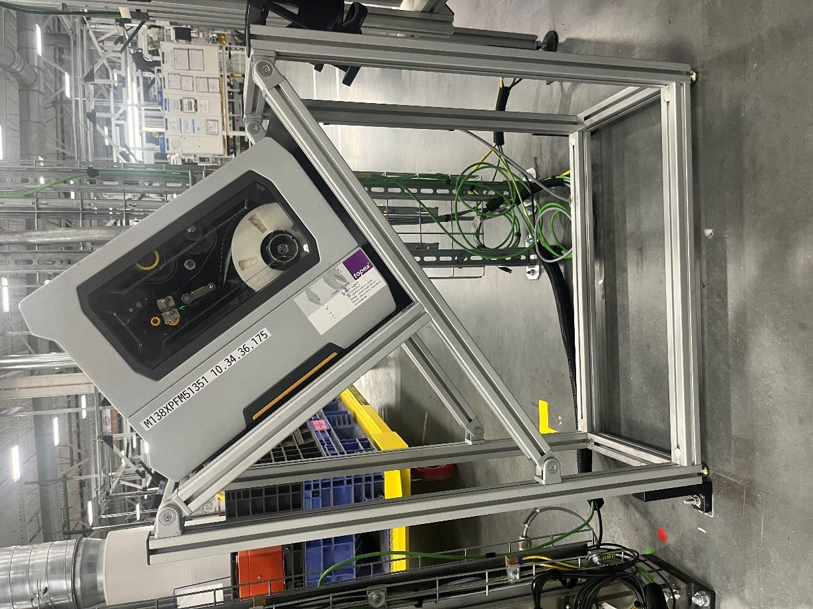
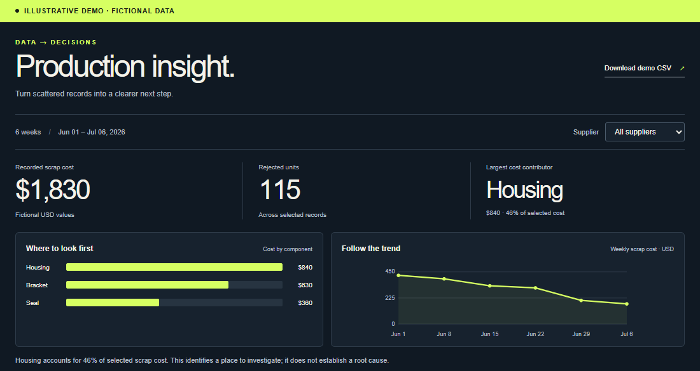

Hands-on engineering that connects mechanical design to working systems.
Mechanical engineering student at the University of Alabama. Interested in robotics, testing, and automation. Expected graduation: May 2027.
01 / Spudnik Equipment · Summer 2024
Mechanical design & reliability
A simpler mount. A more reliable drivetrain.
I redesigned a sugar beet harvester’s chain-drive layout and mounting arrangement to improve tensioning, assembly, and service access.
10 fewer partsin the redesigned assembly
BeforeOriginal assembly
AfterMy simplified design
The decisions
I investigated chain skipping and whip, iterated layouts in NX, raised the chain’s low point, and incorporated tensioning arms. Simplifying the mounting arrangement also addressed assembly access around the gearbox.
The validation
After implementation, the system ran at speed without the previously observed chain skipping. The website includes the original running clip and more detail about my role and testing observations.
Senior capstone: robotic-arm direct ink writing system for non-planar polymer lattices. In progress.
Luke Rodel
Selected engineering work
Automation & production systems
02 / Mercedes-Benz · Fall 2024
Machine vision & integration

Full angled printer installation.
Inspection without the extra steps.
I tested scanning angles and designed an angled printer stand to reduce glare. Working alongside the robotics lead, I helped integrate automatic grading as labels printed.
≈10 secondssaved in the label workflow
PRINT → INSPECT → ACCEPT OR REPRINT
03 / Mercedes-Benz · Summer 2025
Data analysis & workflow automation
A clearer picture of production.
I built Power BI reporting tools and mapped defect, repair, reorder, and chargeback workflows across departments.
Hours → minutesfor a separate monthly reporting workflow

Independent web recreation with fictional data. This is not the employer’s Power BI report.
I used Power Query / M and DAX to prepare data and improve visibility. A related process investigation informed a proposal for better scrap and reclaim traceability; it is distinct from an implemented plant-wide system or a verified financial saving.
Luke Rodel
Packaging, testing & hands-on engineering
Selected work · 2024–2026
Herrick Technology Laboratories · Summer 2026
Mechanical Engineering Intern
Radio hardware. Real-world conditions.
At a defense radio contractor, I worked on mechanical packaging and testing for direction-finding antennas and radio card assemblies.
Direction-finding antenna family
3U VPX radio card family
Public product imagery from Herrick Technology Laboratories: DF antenna family · 3U VPX family. My contribution was to mechanical packaging and testing.
Package & protect
I updated drawings, CAD models, and BOMs; coordinated Altium board layouts with mechanical packaging; prepared hardware for drop and immersion tests; and designed custom carrying cases with calculated foam inserts.
Test & refine
I performed physical thermal tests, calculations, and Autodesk CFD simulations to compare parts and support thermal testing standards. I also evaluated size, weight, power, and cost, and automated insert details in Creo.
More from Mercedes-Benz · 2024–2025
Maintenance & production systems
Mechanical design on the line
I designed and fabricated front-end support brackets, reverse engineered replacement parts, created roller nestings and FIFO storage, and designed scanner mounts, tablet hand rests, and a mobile camera cart.
Workflows & practical tools
Additional work included label jigs and work instructions, error-log comparison tools, HV-cap maintenance, production layout updates, reporting automation, and AI tools and training with the Data Team.